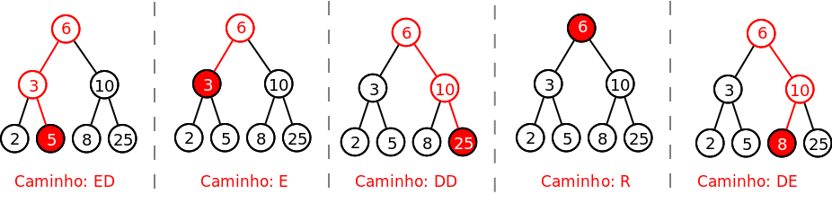

Use como base as classes BTree<T> e BTNode<T> conforme descritas no exercício 2 da aula prática.
Acrescente à classe dada um novo método public T path(String s) que devolve o valor guardado no caminho indicado pela string s.
A string s pode ser "R" (indicando a raíz da árvore) ou então ser constituída por caracteres 'E' (esquerda) e 'D' (direita) indicando o caminho a seguir desde a raíz para chegar ao nós desejado. É garantido que o caminho é válido, ou seja, que corresponde a um nó existente na árvore. A figura seguinte ilustra 5 diferentes caminhos numa mesma árvore e a que nó se chega (o nó a vermelho com número a branco).

Deverá submeter apenas a classe BTree<T>, acrescentando o método path como pedido (e sem apagar ou modificar nenhum dos outros métodos dados como base). Pode assumir que terá acesso no Mooshak à classe BTNode<T> (não a pode mudar) e se precisar pode criar outros métodos auxiliares. O Mooshak irá criar várias instâncias da sua classe e irá fazer uma série de testes ao método por si implementado.
Os exemplos correspondem à arvore da figura, ou seja, t = 6 3 2 N N 5 N N 10 8 N N 25 N N
| Chamada | Valor de retorno |
|---|---|
| t.path("ED") | 5 |
| t.path("E") | 3 |
| t.path("DD") | 25 |
| t.path("R") | 6 |
| t.path("DE") | 8 |
Conteúdo de Fernando Silva (DCC/FCUP), migrado de dcc.fc.up.pt/~fds/aulas/EDados/2526/praticas/problems/prob206.html.